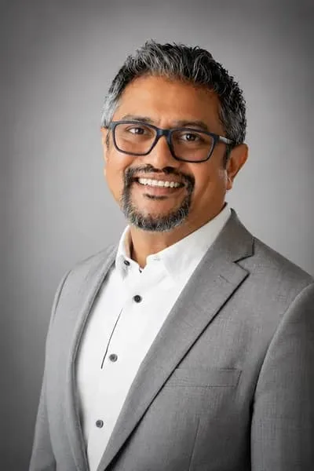

Citizenship & Naturalization Lawyers in Orange County, CA
You’ve Built a Life Here. Let’s Take the Next Step Toward Citizenship.
Becoming a U.S. citizen is a meaningful milestone. Questions about eligibility, travel, testing, or the interview should not keep you from getting informed. JOS Immigration Law helps you review your situation and prepare for the naturalization process with greater confidence.
Start Your Citizenship Consultation →Serving individuals and families in Orange County, California.
How We Can Help
Your American Dream Has Another Chapter.
Naturalization is more than an application. For many people it represents belonging, stability, and participation in the country they call home. We help clarify the requirements and identify concerns that deserve attention before filing.
Start Your Citizenship Consultation →N-400 Naturalization Applications
Review eligibility, application details, and supporting documents.
Citizenship Eligibility Reviews
Evaluate continuous residence, physical presence, permanent residence, and other criteria.
USCIS Interview Preparation
Explain interview procedures and applicable English and civics requirements.
Travel and Residency Concerns
Review absences from the United States that may affect eligibility.
Citizenship Through Parents
Assess possible acquired or derived citizenship claims.
Denials and Complex Cases
Review denied applications or concerns involving prior immigration or criminal history.
Your American Dream Has Another Chapter
Naturalization is more than an application. For many people it represents belonging, stability, and participation in the country they call home. We help clarify the requirements and identify concerns that deserve attention before filing.
Why Choose JOS Immigration Law?
Clear guidance. Careful preparation.
We Listen First
We take time to understand your circumstances, priorities, and questions before discussing potential legal options.
Clear, Personal Guidance
Immigration matters are personal. We explain requirements and next steps in straightforward language.
Careful Case Preparation
Our team helps organize relevant information and documentation for the applicable process.
Respect and Professionalism
Every client deserves attentive communication and respectful legal guidance.
Meet the Immigration Legal Team
Real people. Important decisions.Hopes for the future.
At JOS Immigration Law, every immigration matter represents real people, important decisions, and hopes for the future. Our team is committed to attentive, professional guidance tailored to each client’s circumstances.

Binoye Jos · Founder & Attorney
Founder · Attorney
Binoye Jos
A personal reason to make legal help more human.
Binoye founded the firm after his own experience with the legal system. That experience shaped a simple belief: when legal questions become personal, people deserve experienced counsel who listens carefully and explains things clearly.
For professionals and employers navigating employment-based immigration, a consultation starts with your goals, your timeline, and the questions that matter most to you and your family.
- Role
- Founder & Attorney
- Focus
- Employment-based immigration
- Office
- Orange County, CA
Attorney information is provided by the firm. Past experience does not guarantee a similar outcome.
Your Next Steps
A clear place to begin.
Tell Us About Your Situation
Share the basic facts, your goals, and any upcoming deadlines.
Understand Your Options
An attorney can review relevant circumstances and explain possible legal pathways.
Move Forward With a Plan
If you retain the firm, we can help prepare and pursue the agreed legal strategy.
Frequently Asked Questions
A little clarity can help.
When can I apply?
Many permanent residents qualify under a five-year pathway; certain spouses of U.S. citizens may qualify under a three-year pathway. Other requirements apply.
Will I need to take a test?
Many applicants must meet English and civics requirements, although exceptions or accommodations may apply.
Can travel affect eligibility?
Yes. Some absences affect continuous residence or physical presence.
What if I have an arrest or conviction?
Criminal history may affect eligibility and should be reviewed before filing.
What if my application was denied?
Administrative review or other options may be available depending on the circumstances.
You’ve Come a Long Way. Let’s Talk About What’s Next.
You deserve answers that are clear, thoughtful, and specific to your circumstances. Contact JOS Immigration Law to discuss the next step.
Request a Confidential Consultation →